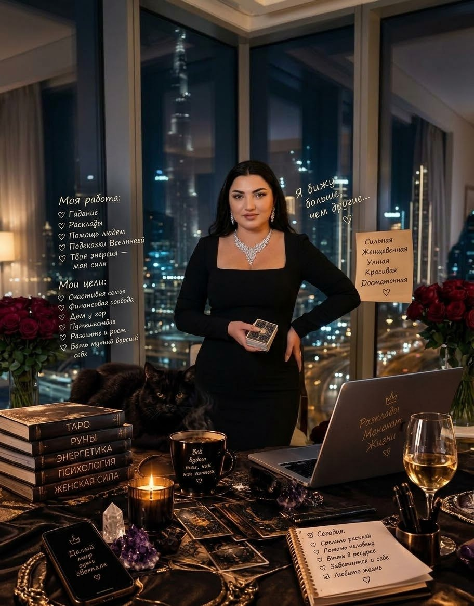
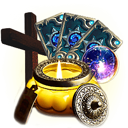
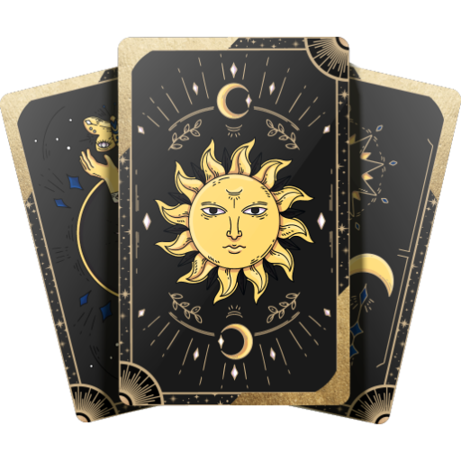
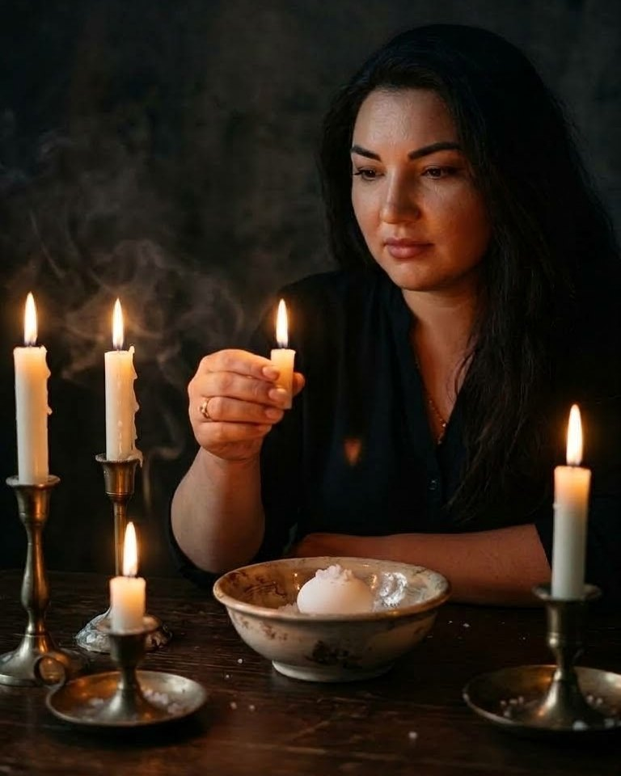

Любимый отдалился
Он стал холоднее, реже пишет, уходит от разговора, и вы не понимаете, что произошло.
Я Зарина — гадалка, ясновидящая и таролог. Вижу то, что скрыто: читаю чувства, нахожу причины там, где другие видят только следствие. Расклады Таро и Ленорман, гадание на картах и на кофе, любовный приворот, снятие порчи и сглаза, защита и обереги — онлайн, по фото и по голосу.

Делаю расклад на ситуацию и разбираю её глубоко: чувства, охлаждение, соперницу, семейный разлад, порчу или сглаз и следующий шаг.
Он стал холоднее, реже пишет, уходит от разговора, и вы не понимаете, что произошло.
Связь прервана, но чувства не отпускают. Важно понять, есть ли путь назад и что мешает сейчас.
Есть ощущение чужого вмешательства, третьего лица или влияния на ваши отношения.
Разговоры заканчиваются конфликтом, доверие ушло, а напряжение только растёт.
Полоса неудач, тяжесть, тревога, упадок сил, повторяющиеся срывы и неприятные события.
Стоите перед выбором и хотите понять, куда ведёт ситуация и где правда. Здесь поможет гадание на Таро или Ленорман.
Живые кадры без шаблонной постановки: гадание на картах Таро, работа со свечами и личные приёмы.

Если вы не знаете, какой формат нужен, просто опишите ситуацию. Я подскажу, с чего лучше начать.
* Результаты индивидуальны и могут отличаться в каждом конкретном случае.

Подбираю способ гадания под ваш вопрос. Расклад можно сделать онлайн: достаточно написать в WhatsApp и коротко описать ситуацию.
Расклады Таро на любовь, отношения, соперницу, работу и деньги. Показывают чувства, мотивы и вероятное развитие событий.
Гадание на картах Ленорман отвечает конкретно: что происходит, что ждёт впереди и какие люди влияют на ситуацию.
Гадание на игральных картах на любимого, на его мысли и чувства, на судьбу и на то, что было, есть и будет.
Гадание на кофейной гуще помогает увидеть знаки и ближайшие перемены в любви, делах и семье.
Когда всё запутано, смотрю ситуацию целиком: что происходит, кто влияет, что мешает и какой шаг будет правильным.
По фотографии смотрю человека и отношения: чувства, намерения, наличие порчи, сглаза или чужого влияния.
Карта Таро даст короткую подсказку, а если захотите — сделаем полный расклад на вашу ситуацию.
Сосредоточьтесь на своём вопросе и вытяните карту.


Меня зовут Зарина, я гадалка, ясновидящая и таролог. Делаю расклады Таро и Ленорман, гадаю на картах и на кофе, провожу любовный приворот, снятие порчи и сглаза, ставлю защиту и делаю обереги. Если ситуация запутана, не нужно разбираться в названиях обрядов и форматов. Это моя задача.
Отзывы после гадания на Таро, любовной магии и чистки от негатива.
* Результаты индивидуальны и могут отличаться в каждом конкретном случае.
Если ситуация уже давит, лучше не тянуть. Опишите вопрос — гадание, приворот, снятие порчи или защита — и я подскажу, какой шаг сейчас будет правильным.
Напишите своё имя и вопрос. Кнопка откроет готовое сообщение в WhatsApp.